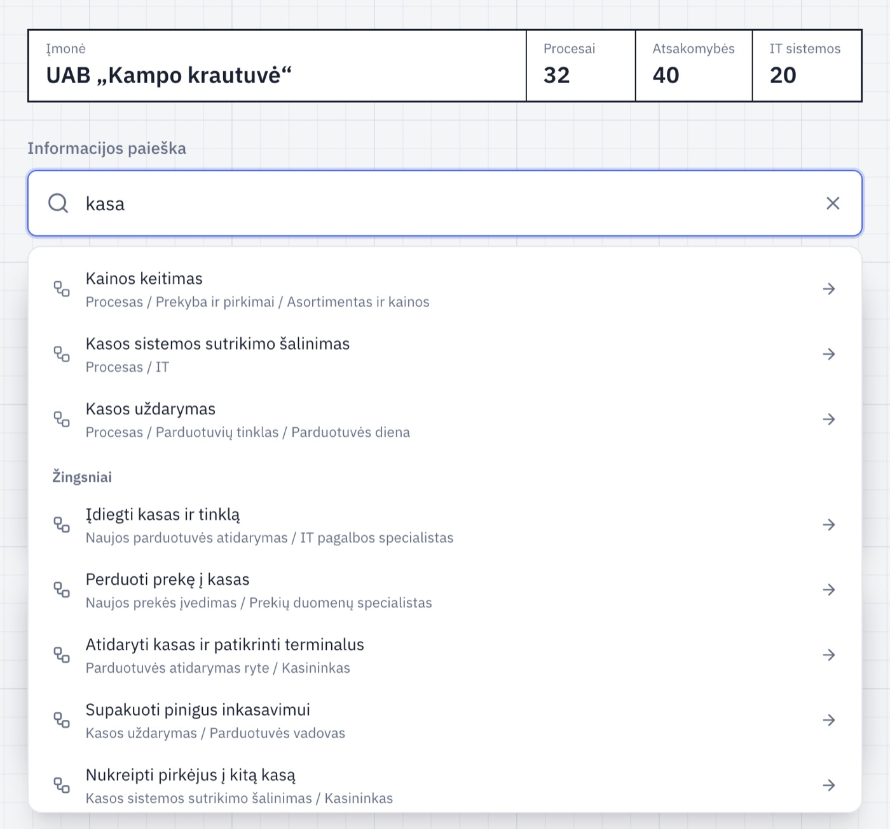
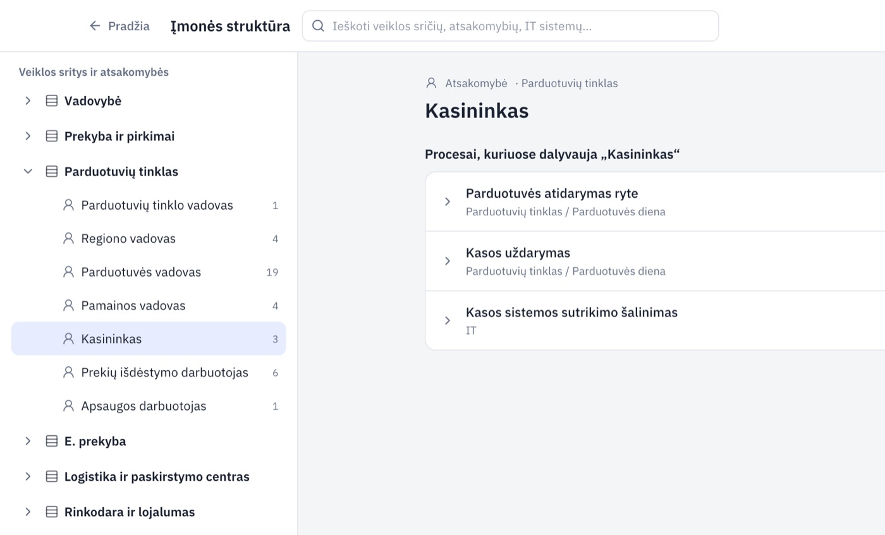
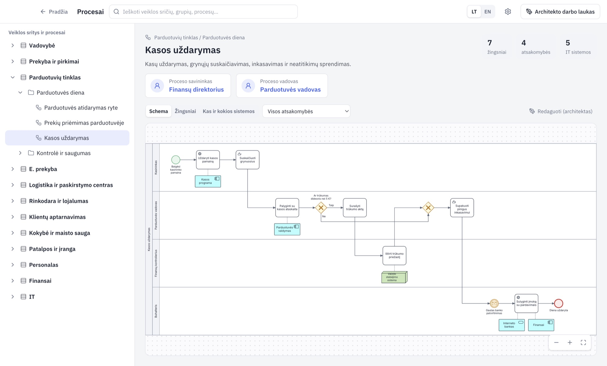

Kaip atidaryti savo įmonės procesus
Jūsų įmonės procesus kažkas jau nubraižė. Jums reikia tik juos atsidaryti ir rasti savo darbą. Nieko nesugadinsite – galite tik žiūrėti.
-
1
Pažiūrėkite, ką gavote
Laiške bus vienas iš dviejų dalykų:
Aplanko nuoroda
Bendras aplankas OneDrive, Google Drive ar tinklo diske. Jame laikomi įmonės procesai.
Failas .promodo
Vienas failas, pavyzdžiui Kampo krautuvė.promodo. Išsaugokite jį kompiuteryje.
-
2
Įdiekite Promodo
Atsisiųskite programą savo kompiuteriui ir įdiekite. Pirmą kartą atidarant kompiuteris paklaus, ar tikrai atidaryti – tai normalu, ir užtrunka minutę.
-
3
Atidarykite savo įmonę
Jei gavote failą
- Dukart spustelėkite failą .promodo.
- Jei prašo slaptažodžio, įveskite tą, kurį gavote iš vadovo.
- Spustelėkite Įdiegti.
Jei gavote aplanką
- Įsitikinkite, kad aplankas matomas jūsų kompiuteryje (OneDrive ar Google Drive jį atsisiuntė).
- Promodo viršuje dešinėje spustelėkite krumpliaratį – Nustatymai.
- Skiltyje Bibliotekos aplankas spustelėkite Pasirinkti kitą aplanką… ir pasirinkite gautą aplanką.
Viršuje pamatysite savo įmonės pavadinimą.
-
4
Raskite, ką darote
Lengviausia – paieška. Laukelyje Informacijos paieška įrašykite žodį: savo pareigas, darbą ar programą, kuria dirbate. Pavyzdžiui, kasa.

Spustelėkite eilutę, ir atsidarys procesas ar žingsnis. Arba spustelėkite Įmonės struktūra, tada savo sritį ir savo pareigas. Pamatysite visus procesus, kuriuose dalyvaujate.

Kasininkas dalyvauja trijuose procesuose. -
5
Atidarykite procesą
Proceso puslapyje matote, kas už jį atsako (savininkas ir vadovas), schemą ir žingsnius. Sąraše Visos atsakomybės pasirinkite savo pareigas – jūsų žingsniai bus paryškinti.

Skirtukai: Schema, Žingsniai, Kas ir kokios sistemos. Grįžti atgal – Pradžia viršuje kairėje.
Kažkas neaišku? Klauskite žmogaus, kuris jums atsiuntė procesus – jis juos parengė ir gali pataisyti. Jūs nieko neištrinsite ir nepakeisite, todėl drąsiai spaudinėkite.
Šį puslapį galite persiųsti kolegoms: gavau-nuoroda.html